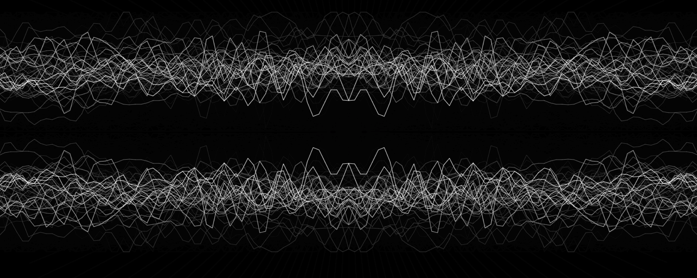

Audio Visualizer
As a huge lover of music and someone interested in electronic music, I was extremely excited to develop an application that lets users see dynamic audio visualization to
their favorite songs. I designed the visualizer around one of my personal favorite music artists, Ecco2k, and preloaded the application with some of his songs
(all music rights go to Ecco2k). User's are also able to upload their own MP3 files for visualization!
Utilizing the Web Audio API, this project was developed by parsing audio frequency and waveform data into usable JavaScript arrays and then drawing canvas visuals according
to array values. This project thus involved a deep understanding of the Web Audio API's audio graph and the ability to construct various nodes for manipulation of frequencies
and analysis. Event handlers are used to allow for real-time user manipulation of the audio playback and visual artwork. I also ensured a pleasing user experience by designing
a simple and minimalist UI that allows for user control and understanding of the software while still maintaining a clear emphasis on the visual components.